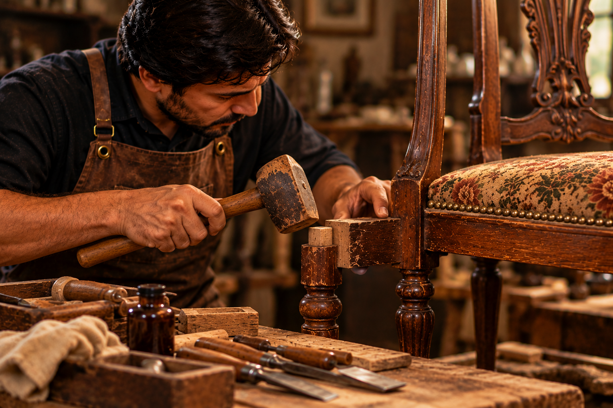
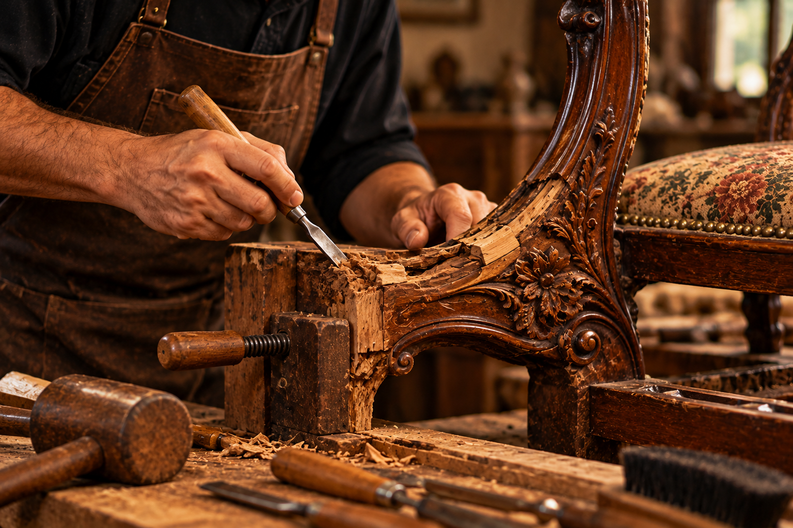
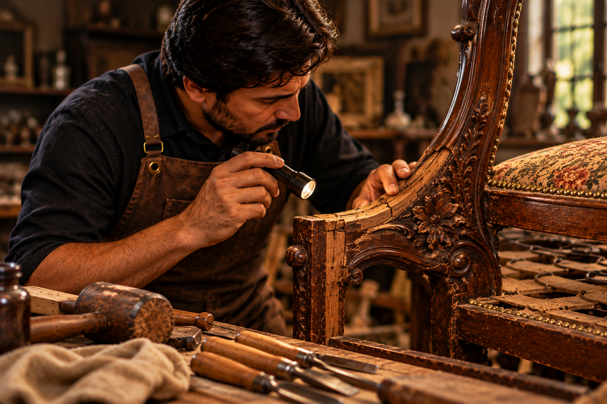
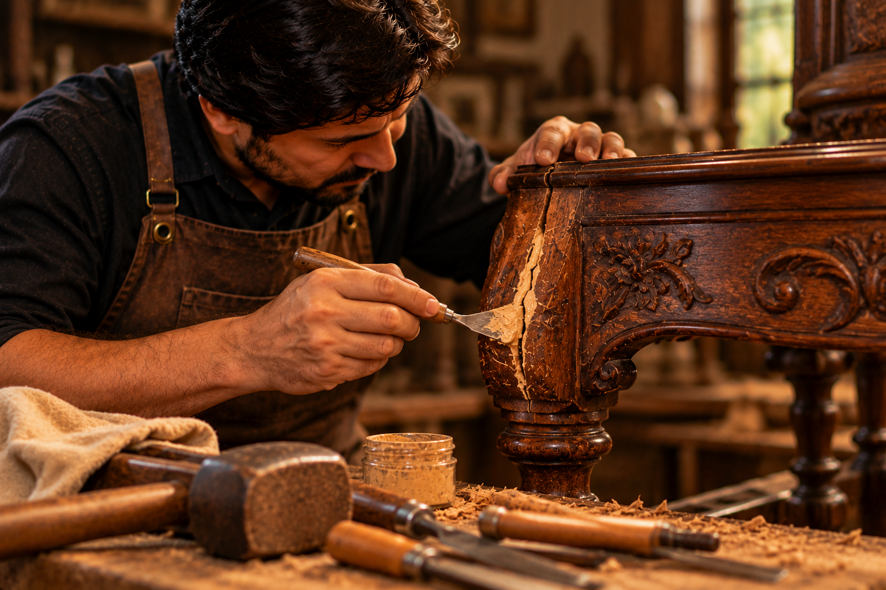
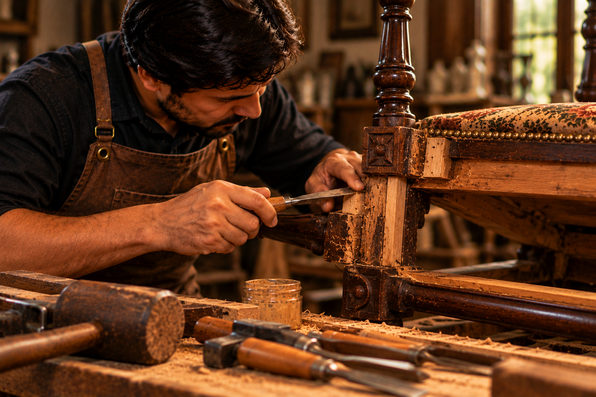
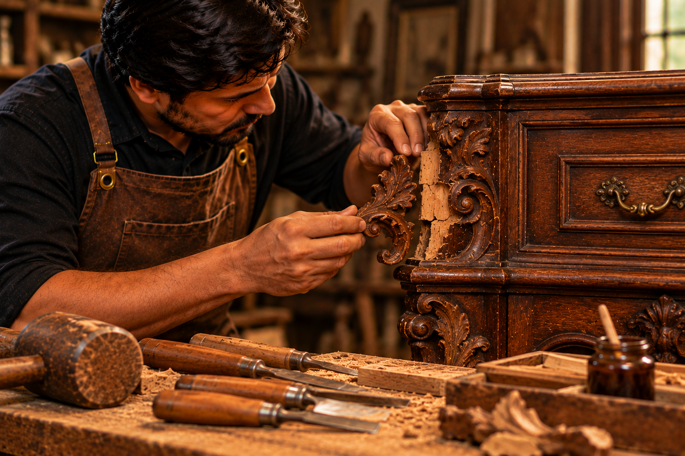
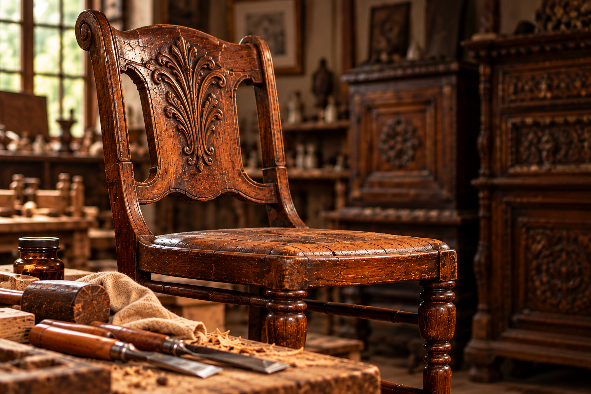
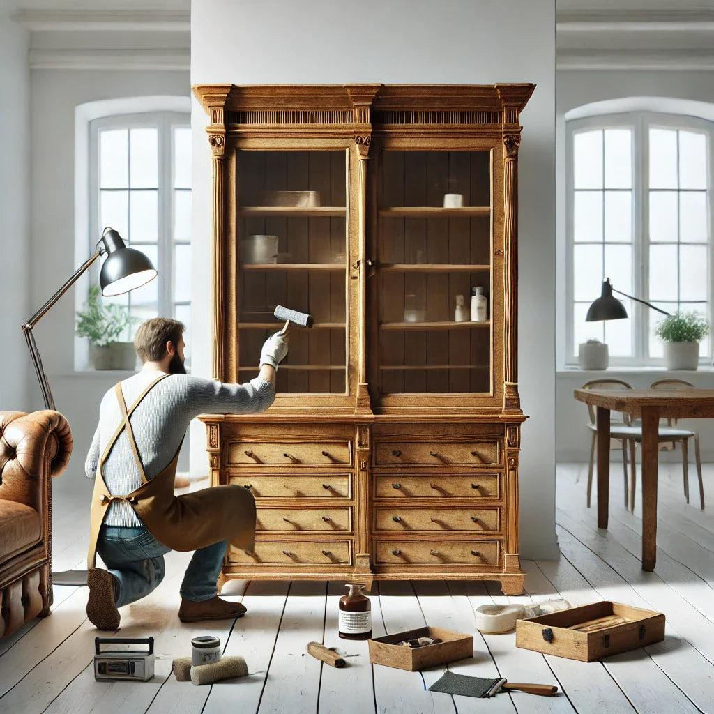

01Loose Joints
Movement between joined components can make chairs, tables, and cabinets unstable and may worsen with continued use.
Antique & Vintage Furniture
Vintage Era · Restoration Services
Protect the strength, character, and craftsmanship of your treasured antique furniture with thoughtful repairs that respect its original design and history.

Careful repairs. Lasting character.
Understanding Antique Wood
Years of use, changing environments, and natural ageing can affect the strength of antique furniture. Recognising these issues early helps us choose the right approach to preserving each piece.

A loose joint, a visible crack, or a weakened frame can have different causes. We assess the furniture's construction, materials, and condition before recommending suitable repairs.

01Movement between joined components can make chairs, tables, and cabinets unstable and may worsen with continued use.

02Age, moisture changes, and stress can contribute to cracks that need careful assessment before repair.

03Worn supports and weakened structural components can affect the stability and everyday usability of antique furniture.

04Missing, chipped, or damaged wooden elements may require carefully considered repairs to preserve the original design.
The Beauty of Authenticity
Antique wood carries the traces of time, traditional craftsmanship, and generations of use. Our approach honours these qualities instead of making every piece look new.

The character of naturally aged wood
The patterns, tones, and textures of aged timber give every antique its own identity. We take these details into account when planning a repair.
Years of use can create a distinctive surface character. Where appropriate, we aim to retain this sense of age rather than remove it unnecessarily.
Traditional joinery, carved details, and handcrafted features deserve thoughtful treatment that respects how the furniture was originally made.
When a repair is needed, our aim is to complement the existing piece so that its restored elements sit naturally alongside its original details.
Our goal is not to erase the years, but to preserve what makes each piece worth passing on.
The Vintage Era PhilosophyA Thoughtful Process
Every antique has its own construction, history, and needs. Our process begins by understanding the piece and choosing an approach that respects its original character.

Understand first. Restore with care.
We examine the furniture's structure, joints, visible damage, wood grain, and existing finish to understand its condition before recommending repairs.
Based on the assessment, we identify suitable repair methods and discuss the work required, with preservation of original material as an important consideration.
Structural concerns are addressed with care, using methods appropriate to the piece and paying attention to its original details and character.
We review the completed work, paying attention to stability, the quality of the repair, and how the restored areas relate to the original furniture.
Your Furniture, Our Craftsmanship
Whether your cherished piece needs structural attention or thoughtful wood repair, let us help you explore the right approach to preserving its character for years to come.
Preserving the past. Caring for the future.